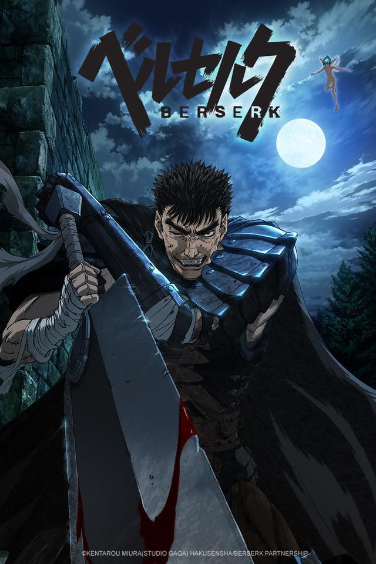

1985 - Futatabi.
O one-shot de ficção científica “Futatabi” foi criado para sua inscrição na
Universidade Nihon.
O mangá foi posteriormente publicado na revista Weekly Shonen,
o que lhe rendeu uma indicação para Melhor Autor iniciante com apenas 19 anos.
1986 - Noa
Miura publicou outro one-shot, dessa vez de ficção científica,
“Noa”, na revista Fresh Shonen. Esse one-shot foi um sucesso e colocou ele no radar
de mais editoras o que no futuro faria com que ele fizesse parcerias melhores.
1988 - Berserk #0
Em 1998, Miura publicou o “Berserk Prototype” na Monthly ComiComi. Este one-shot de 48 páginas
serve como um esboço da série posterior. Seu trabalho ganhou o prêmio ComiComi
Manga School, aqui ele tinha 22 anos.
1989 - King of Wolves
Aqui com 23 anos, Miura já era Graduado pelo Departamento de Arte da Universidade Nihon.
Nesse ano ele desenhou “King of Wolves” (王狼) baseado em um roteiro de Yoshiyuki “Buronson” Okamura,
o escritor de “Hokuto no Ken” (Fist of the North Star). A obra foi serializada na
revista Animal House em três edições, de maio a julho.
1989 - Berserk
Ainda em 1989 pela primeira vez “Berserk”, Black Swordsman (黒い剣士), foi publicada
na revista Animal House de forma regular no final daquele ano, em outubro.
Miura já tinha completado 24 anos. Vale dizer que o mangá de Berserk vem sendo publicado até os
dias de hoje, sendo a principal e mais icônica obra de Miura.
1996 - Berserk Anime
Já em 1996 se focando marjoritariamente em Berserk Miura trabalhou com os estúdios VAP e
OLM para supervisionar a produção da adaptação de em anime
de Berserk, o anime teve 25 eposórios e foi ao ar de outubro de 1997 a março de 1998 na
Nippon TV.
1996 - Artbook #1
Aos 31 anos, lançou o primeiro artbook de Berserk intitulado "Berserk Illustrations File",
apresentando pinturas originais e uma longa entrevista. O artbook foi um grande acerto
visto que a habilidade de desenho e os traços de Miura era de alta qualidade.
1999 - Jogo de Berserk
Aqui aos 33 anos de idade, Miura atuou como Supervisor Executivo do, Berserk: Chapter
of the Oblivion Flowers (鷹篇 喪失花の章), para o console Dreamcast.
Desenvolvido pela Yuke's. Lançado no ocidente como
“Sword of the Berserk: Guts Rage”. Miura escreveu o roteiro, criou personagens
originais e contribuiu com designs de personagens.
2002 - Prêmio Tezuka
Em 2002 aos 36 anos de idade, Miura foi premiado no 6º Prêmio Cultural Tezuka.
Miura recebeu o Prêmio de Excelência por seu trabalho em Berserk. O prêmio Tezuka é
concedido anualmente para o autor de melhor manga (série ou volume único) publicado.
O prémio consiste num laço, uma estátua cuja forma é uma reminiscência de Astro Boy.
2002 - Prêmio Tezuka
Em 2002 aos 36 anos de idade, Miura foi premiado no 6º Prêmio Cultural Tezuka.
Miura recebeu o Prêmio de Excelência por seu trabalho em Berserk. O prêmio Tezuka é
concedido anualmente para o autor de melhor manga (série ou volume único) publicado.
O prémio consiste num laço, uma estátua cuja forma é uma reminiscência de Astro Boy.
2004 - Berserk Ps2
Aos 38 anos Miura colaborou em “Berserk: Millennium Falcon, Record of the Holy Evil War”
(ベルセルク 千年帝国の鷹篇 聖魔戦記の章), um jogo para Sony Playstation 2. O jogo adapta
eventos selecionados dos Volumes 22-27, juntamente com um novo cenário que Miura escreveu
para o jogo.
2009 - Berserk 20 anos
Em 2009 Miura está com 43 anos de idade e Berserk comemora seu 20º aniversário com uma série
de presentes na revista Young Animal,
incluindo um enorme pôster ilustrado por Miura, uma capa alternativa do Volume 34, e o Berserk
Character & World Guide , um livreto detalhando os personagens e o mundo de Berserk.
2012 - Arte Blu-Ray
Em 2012, aos 46 anos de idade, Miura contribuiu com a arte original para o lançamento do disco
“Berserk: Golden Age”, uma adaptação da trilogia de longa-metragem do arco Golden Age de Berserk,
produzida pelo Studio 4°C.
2013 - Gigantomakhia
Aos 47 anos, Miura publicou a minissérie de ficção científica em 7 partes “Gigantomakhia”,
que foi publicada de novembro de 2013 a fevereiro de 2014. Miura disse que era sua maneira de
contribuir para o 20º aniversário da Young Animal.
2016 - Berserk Anime
Em 2016, o Volume 38 de Berserk foi lançado, notável por apresentar a primeira arte digital publicada
por Miura. Miura por muito tempo relutou na utilização de Arte Digital.
2016 - Berserk Anime
Aos 50 anos de idade, Miura atuou como supervisor executivo de uma adaptação em anime de 24
episódios de Berserk, produzida pelos estúdios GEMBA & Millepensee, o anime reconta
aproximadamente a história dos Volumes 14-28. Miura escreveu um cenário original para o terceiro
episódio e quatro pinturas originais para eventuais lançamentos em Blu-Ray.

2017 - Light Novel
Aos 51 anos, Miura fez 10 ilustrações originais, além de uma capa, para o primeiro light novel de
Berserk , "Flame Dragon Knight" (炎竜の騎士), escrito por Fukami Makoto. Foi lançado em 2019 em territórios
ocidentais.
2019 - Duranki
A equipe de Miura, o Studio Gaga, lançou "Duranki" com Miura atuando como produtor, escrevendo a história
e fornecendo a arte principal. Aqui Miura estava com 53 anos e
montando uma equipe no intuito de lançar Berserk com maiores
regularidade, visto que ele fazia tudo sozinho.